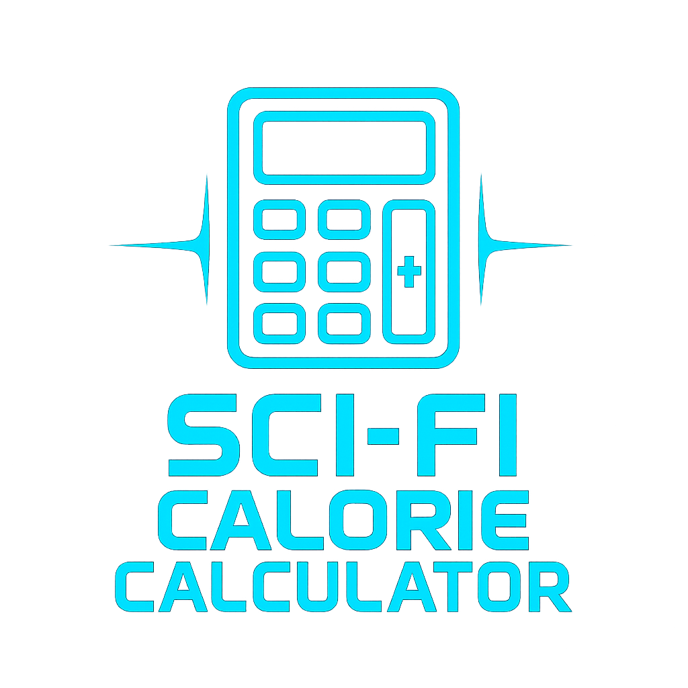

Optimizing Human Biology: The Science Behind the Terminal
Welcome to the future of biological sustainment. The Cyber-Nutrient Terminal is a precision tool engineered for gym-goers, athletes, and individuals serious about optimizing their body composition through accurate data tracking.
The Mifflin-St Jeor Equation
Calculating your Basal Metabolic Rate (BMR) is the foundation of any successful physical transformation. Rather than relying on outdated formulas, this terminal utilizes the Mifflin-St Jeor equation. Recognized by clinical dietitians and sports nutritionists as one of the most highly accurate predictive equations, it determines the baseline energy your body requires to function at rest.
Dynamic Macronutrient Allocation
A major flaw in basic fitness applications is their reliance on static percentage splits (such as 30% Protein, 40% Carbs, 30% Fats). As caloric intake increases during a bulking protocol, strict percentages force an unnecessarily high protein intake.
To solve this, our terminal utilizes a dynamic, bodyweight-based algorithm for its Hypertrophy Protocol:
- Protein: Locked at 2.2 grams per kilogram of body weight to maximize muscle protein synthesis without overwhelming the digestive system.
- Fats: Allocated at 25% of total caloric intake to ensure optimal hormone regulation and joint health.
- Carbohydrates: The remaining energy is allocated to carbs, providing the primary fuel source required for high-intensity resistance training.
How to Execute Your Protocol
Operating the terminal is straightforward. Input your physical metrics and select your current activity level. Once the terminal processes your data, you can toggle between three specific goals: Maintenance, Weight Loss (Deficit), and Weight Gain (Surplus). The integrated pie chart will dynamically adjust your required macronutrients in real-time, allowing you to instantly build your daily meal plans around accurate targets.
Macro Allocation
Protein (30%): 0g
Carbs (45%): 0g
Fats (25%): 0g